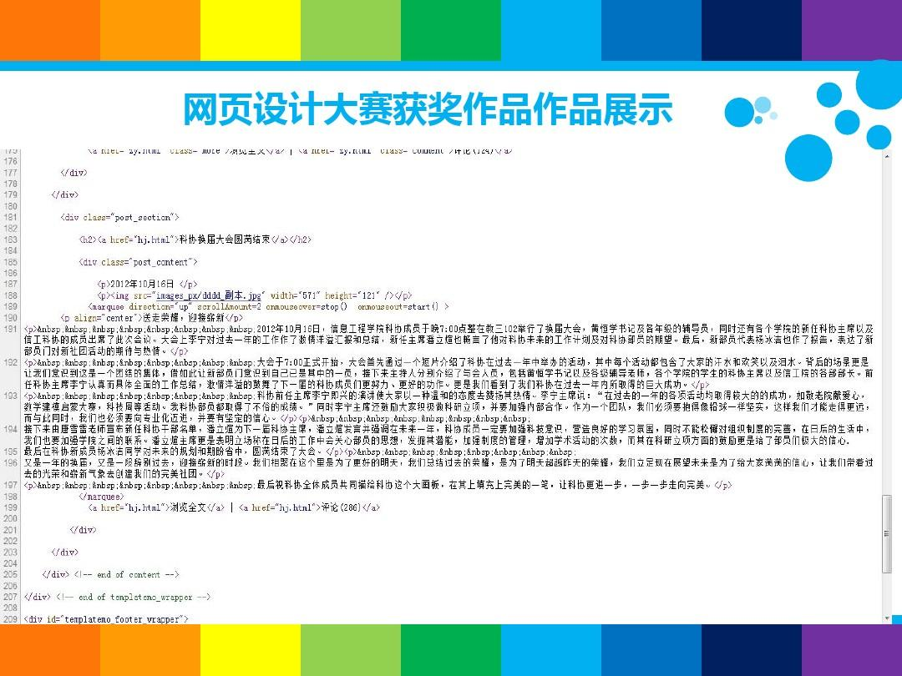

|  | |||||
|
|||||
| 为了提高我校大学生的网页设计和制作水平，促进校园文化发展，充分利用网络资源，更好地服务于教学、科研、管理等各项工作，整体推进学校教育信息化进程，举办首届“学生网页设计大赛”活动。 一、大赛宗旨 倡导时代文明，丰富校园文化；培养创新能力，加强网络建设。 二、大赛目的 开展全校学生网页设计大赛，使他们认识互联网络在学习、工作和交流中的重要作用，为他们提供一个艺术想象的空间、情操陶冶的园地和学习互助的场所，吸纳作品创意，宣传学院，丰富和活跃校园网络文化为目的，并通过本次比赛发现和培养网页设计人才。 三、大赛内容 动态或静态Web站点页面设计。 四、参赛对象 本校全体学生，年级不限，凡具有一定网络基础知识，能制作网页者均可参加。参赛者可以是个人、合作小组（不多于5人，含5人）参赛，作品以个人、合作小组署名，享有署名权。 五、比赛规则 1、作品要求原创； 2、参赛作品中的各种文件夹和文件名均使用英文名（小写）； 3、参赛作品中字体设定应为简体字； 4、网页应有较好的浏览兼容性； 5、网页作品中不得含有恶意代码； 6、参赛者须同时向大赛评选委员会提供参赛作品详细说明书，阐述作品的名称、主题、内容、设计技巧、网站功能等，并指明所用工作平台和设计软件； 7、参赛者具有自主版权，并承担相应的法律责任；提供的资料，不涉及国家秘密、商业秘密。 8、为方便评审和展示，大赛组委会可对提供的资料进行复制，在有关大赛的光盘、网站和媒体宣传中使用所提供的资料。 9、本次比赛由大会组委会负责解释。 六、奖励办法 本次大赛由组委会评出一等奖壹名；二等奖 叁名；三等奖六名，并为所有获奖作品颁发个人证书。 |